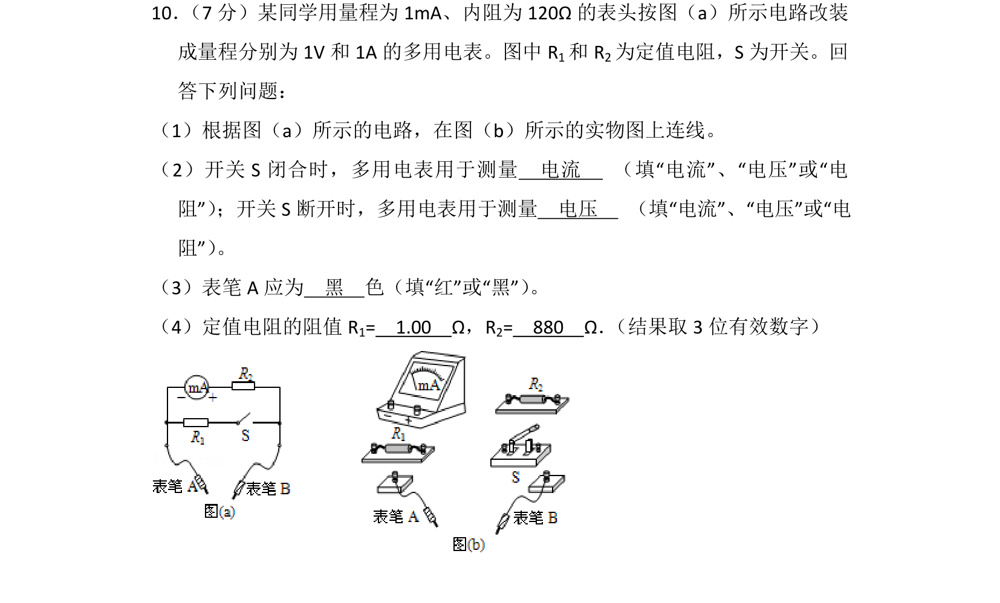
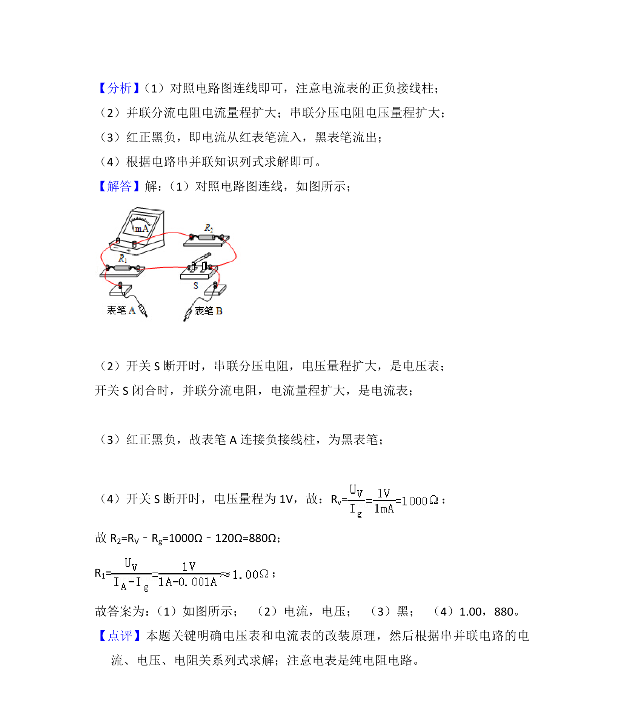

考点：电流表改装 闭合电路欧姆定律 串并联电路

考查多用电表改装原理，包括实物连线、功能判断和定值电阻计算。

📄 原 PDF 第 10 页：
素材/真题/吉林/2008-2024·（吉林）物理高考真题/2013年高考物理试卷（新课标Ⅱ）（解析卷）.pdf
10． （7分）某同学用量程为1mA、内阻为120Ω的表头按图（a）所示电路改装 成量程分别为1V和1A的多用电表。图中R 1和R 2为定值电阻，S为开关。回 答下列问题： （1）根据图（a）所示的电路，在图（b）所示的实物图上连线。 （2）开关S闭合时，多用电表用于测量 电流 （填“电流”、“电压”或“电 阻”） ；开关S断开时，多用电表用于测量 电压 （填“电流”、“电压”或“电 阻”） 。 （3）表笔A应为 黑 色（填“红”或“黑”） 。 （4）定值电阻的阻值R 1= 1.00 Ω，R2= 880 Ω． （结果取3位有效数字）
【考点】NA：把电流表改装成电压表．菁优网版权所有 【专题】13：实验题；535：恒定电流专题．